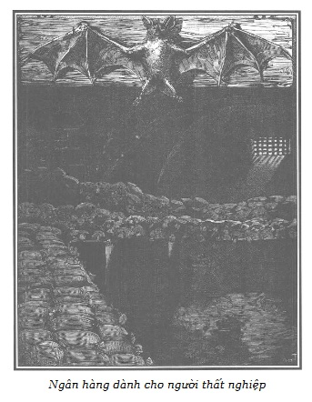

– Ngài thử hình dung mà xem, thưa ngài linh mục, Polidori nói với cha xứ nhưng mỗi lúc lại phóng một cái nhìn châm biếm về phía Jacques Ferrand như để nhấn mạnh lời nói – ngài thử hình dung, bạn tôi đã nhận thấy ở cô người hầu mới, tên là Cecily, như đã thưa với ngài, có những đức tính tuyệt vời… đức khiêm tốn lớn… rất mực dịu dàng… và nhất là rất sùng đạo. Chưa hết đâu! Anh Jacques, ngài biết đấy, do lâu năm hành nghề, nên cực kỳ minh mẫn, anh ấy sớm nhận ra người thiếu phụ ấy, cô ta còn trẻ và rất đẹp, thưa ngài linh mục, nhận thấy người thiếu phụ ấy không phải sinh ra để làm người ở và cùng với những nguyên tắc… đạo đức trong khắc khổ… cô ta còn có trình độ học vấn vững vàng và những kiến thức… rất đa dạng…
– Như thế thì thật lạ! – Người linh mục chăm chú nghe. – Tôi hoàn toàn không biết những tình tiết này… Nhưng ông làm sao thế, hỡi ông Ferrand? Hình như ông thấy trong người khó chịu hơn thì phải?
– Cũng có thế thật, – viên chưởng khế lau mồ hôi lạnh toát trên trán – do đã phải dằn lòng quá nhiều, tôi hơi váng đầu… nhưng rồi sẽ qua thôi.
Polidori nhún vai, cười mỉm:
– Thưa ngài linh mục, ngài để ý mà xem, lúc nào anh Jacques cũng vậy, khi người ta phát hiện được một việc thiện kín đáo của anh ấy; anh ấy đến là khiêm tốn trước những việc tốt mình đã làm! Thật may mắn là đã có tôi, phải biểu dương xứng đáng, tưng bừng anh ấy mới đúng. Lại nói về Cecily, hẳn cô ta đã sớm đoán được lòng hảo tâm của anh Jacques; thấy anh ấy hỏi về quãng đời đã qua, cô ta đã hồn nhiên thú nhận, giữa nơi đồng đất nước người, không phương xoay xở, lại bị anh chồng chẳng ra gì dồn vào thế bí, cô ta đã coi việc được thu nhận trong ngôi nhà thánh thiện của người đáng kính như anh Jacques đây như có trời phù hộ. Trước cô gái chịu bao nỗi bất hạnh, nhẫn nhục và nết na như vậy, anh Jacques không còn ngần ngại, viết ngay thư về quê cô ta để tìm hiểu ngọn ngành; những thông tin trở lại đều tốt, và công nhận đúng như những điều cô ta đã kể. Sau đó, đinh ninh việc thiện mình sẽ làm là xứng đáng, anh Jacques đã “ban phúc lành” cho cô Cecily như con gái mình, cấp cho cô ta một số tiền đủ để về quê sinh sống, chờ đợi những ngày tốt đẹp hơn, có cơ hội tìm được một địa vị thích hợp hơn. Tôi không nói nhiều hơn nữa để ngợi khen anh Jacques: tự thân sự việc thừa sức thuyết phục, bằng mấy mươi lần lời nói.
– Tốt, tốt thật! – Ông linh mục cảm động, lớn tiếng trầm trồ.
– Thưa ngài linh mục, – lão Ferrand trầm giọng, dứt khoát – tôi không muốn lạm dụng thì giờ quý báu của ngài, xin đừng nói thêm gì về tôi nữa, tôi van ngài. Vì tôi đã khẩn khoản mời ngài về đây, thì chỉ xin bàn về kế hoạch mà tôi muốn xin ngài rộng lòng khoan dung cộng tác với tôi mà thôi.
– Tôi hiểu rằng những lời ngợi khen của ông bạn đây xúc phạm đến đức khiêm tốn của ông. Vậy nên chúng ta chỉ nên chú tâm đến những việc thiện sắp tới đây của ông mà quên đi con người tạo tác, nhưng xin hãy nói về một việc ông nhờ cậy tôi trước đã. Tôi đã thể theo ý nguyện của ông mà đứng tên ký gửi ở Ngân hàng Pháp quốc số tiền một trăm nghìn écu bồi hoàn do ông làm trung gian và tự thân tôi thực thi. Ý ông đã muốn rằng số tiền ký gửi ấy không để tại nơi ông thì hơn; tuy nhiên, dù có để ở nơi ông đi chăng nữa, thì vẫn an toàn chẳng kém gì ký gửi ở ngân hàng.
– Về việc này, thưa ngài linh mục, tôi làm theo đúng ý muốn người chủ ẩn danh của vụ bồi hoàn; họ làm như vậy là để lương tâm khỏi cắn rứt. Do nguyện vọng của họ, tôi đã phải giao cho ngài món tiền đó và đề nghị ngài trao trả lại cho bà quả phụ de Fermont, tên thời con gái là Renneville, sau khi bà ta xuất trình đủ chứng chỉ sở hữu. – Giọng viên chưởng khế run run khi nói những lời này.
– Tôi sẽ thực hiện việc ông giao phó.
– Chưa phải là việc cuối cùng, thưa ngài linh mục.
– Càng hay, nếu những việc kia cũng giống việc này: Vì chẳng muốn tìm hiểu duyên cớ áp đặt, lúc nào tôi cũng xúc động trước một vụ bồi hoàn tự nguyện, những quyết định hữu hiệu như vậy, chỉ do lương tâm ra lệnh, được thực hiện một cách trung thực, tự nguyện theo tiếng gọi lương tâm, lúc nào cũng là dấu hiệu của một sự ăn năn thành thực và như thế đâu phải chỉ là chuộc lỗi suông!
– Có phải không, thưa ngài linh mục? Một trăm nghìn écu bồi hoàn một lúc thì quả là hiếm; tôi vốn tò mò hơn ngài nhiều, nhưng tò mò sao lại trước tính kín đáo khó lay chuyển của anh Ferrand. Vì thế cho đến giờ, tôi vẫn chưa biết được tên con người trung thực đã làm cuộc bồi hoàn cao quý ấy.
– Dù có là ai đi nữa, thì tôi cũng chắc chắn rằng người ấy rất được anh Ferrand đánh giá cao và hết sức quý trọng.
– Thật thế, con người trung thực ấy rất được tôi quý trọng và đánh giá cao, thưa ngài linh mục. – Viên chưởng khế tiếp lời bằng một giọng cay đắng dễ nhận thấy!
– Và như vậy chưa phải đã hết ạ, thưa ngài linh mục, – Polidori đưa mắt cho Ferrand với dụng ý – ngài sẽ thấy sự chu đáo cao thượng ở người bồi hoàn ẩn danh này còn lớn tới mức nào nữa kia! Và nếu phải nói cho kỳ hết, tôi rất ngờ là ông bạn đây hẳn đã góp phần không nhỏ làm cho người ta phải lưu tâm chu đáo và còn tìm phương cách thu xếp cho ổn thỏa nữa kia.
– Thế là thế nào nhỉ? – Ông linh mục hỏi.
– Anh muốn nói gì kia? – Lão chưởng khế cũng hỏi.
– Thế còn nhà Morel, cái gia đình trung hậu và lương thiện ấy thì sao?
– À, phải, phải!… Thật đấy… Tôi quên mất… – lão Ferrand u uất trầm giọng xuống:
– Ngài hãy hình dung xem, thưa ngài linh mục, người chủ bồi hoàn ấy, hẳn là được ông Jacques khuyên nhủ, không những chỉ bằng lòng trả lại số tiền đáng kể như vậy mà lại còn… Thôi, xin để cho người bạn đáng kính của tôi nói ra… đây là một niềm vui của anh ấy mà tôi không nỡ chiếm!
– Tôi nghe ông đây, ông Ferrand thân mến.
– Các ngài cũng biết, – Jacques Ferrand nói tiếp với giọng trịnh trọng giả tạo, nhưng đôi lúc bất giác lại có những phản ứng đối với các vai trò lão bắt buộc phải đóng, không giấu nổi do lời nói ngập ngừng và lạc giọng. – Thưa ngài linh mục, ngài đã rõ là sự hư đốn của Louise… là một đòn nặng nề đối với người thợ thủ công ấy, bác này đã phát điên. Vợ con của bác ấy thiếu đi cột trụ duy nhất, có nguy cơ chết vì cùng túng. Cũng may Thượng đế đã ra tay cứu vớt và… cái người tự nguyện bồi hoàn mà ngài đã vui lòng nhận làm trung gian ấy, thưa ngài linh mục, cho rằng làm như vậy là chưa xứng đáng để chuộc tội bội tín nặng nề đã phạm… Họ đã hỏi liệu tôi có biết một nỗi bất hạnh nào cần được đỡ đần không. Tôi đã phải giới thiệu với con người rộng rãi ấy gia đình Morel và họ đã yêu cầu tôi đồng thời với một ngân quỹ cần thiết mà lát nữa tôi sẽ trao lại cho ngài, nhờ ngài đứng ra thiết lập một quỹ niên kim là hai nghìn franc dành cho Morel và số niên kim này có thể chuyển hồi cho vợ và con cái đương sự.
– Nhưng, thật ra thì trước cái nhiệm vụ biết chắc là đáng trọng đây, tôi vẫn thấy lạ, sao người ấy lại không ủy nhiệm cho ông nhỉ?
– Người ẩn danh ấy đã có ý nghĩ, và tôi cũng tán thành với niềm tin của họ; rằng những việc công đức như vậy sẽ có giá trị khác hẳn… tất nhiên là sẽ thiêng liêng hơn… qua bàn tay thanh tịnh của ngài, thưa ngài linh mục.
– Thế thì còn nói gì nữa! Tôi sẽ lập quỹ niên kim dành cho Morel, người cha đau khổ và đáng kính của cô Louise, nhưng, tôi cũng như bạn ông, vẫn tin là ông cũng không đứng ngoài cuộc với cái quyết định áp đặt khoản tiền chuộc tội ấy!
– Tôi đã chỉ định gia đình Morel, không có gì khác, mong ngài hãy tin như vậy!
– Bây giờ ngài sẽ thấy, thưa ngài linh mục, anh Jacques nhân hậu của tôi đã vươn tới tầm cao của những quan điểm bác ái qua cái cơ quan từ thiện mà chúng tôi đã cùng trao đổi ý kiến; anh ấy sẽ đọc cho chúng ta nghe đề án mà anh ấy đã quyết định dứt khoát; tiền nong để thiết lập quỹ niên kim đã sẵn đây, trong tủ sắt, nhưng mới từ ngày hôm qua anh ấy lại thấy ngần ngại, và nếu anh ấy không mạnh dạn trình bày với ngài linh mục thì, tôi… tôi sẽ nói.
– Không cần! – Đôi lúc Jacques Ferrand vẫn thích tự mình huyễn hoặc hơn là nín lặng nghe những lời khen châm biếm của tên đồng lõa. – Công việc như thế này ạ, thưa ngài linh mục. Tôi đã suy nghĩ kĩ… trong sự việc này, có thể là một sự nhún nhường… mang nhiều tinh thần Cơ đốc hơn… nếu cơ sở ấy sẽ không đứng tên tôi.
– Nhưng sự nhún nhường ấy khí cường điệu quá! – Vị linh mục không tán thành. – Ông có thể và phải tự hào một cách chính đáng về cái công trình từ thiện của ông: đó là một quyền lợi, hầu như là một nghĩa vụ, buộc ông phải đứng tên mới đúng.
– Thưa ngài linh mục, tuy nhiên tôi vẫn thích ẩn danh hơn, tôi đã quyết tâm như vậy… Và tôi trông mong rất nhiều vào lòng nhân hậu của ngài, với hy vọng là ngài vui lòng giúp tôi bí mật trong khi thực hiện những thủ tục cuối cùng, và lựa chọn những thuộc viên của cơ sở đó. Tôi chỉ dành cho mình cái quyền được bổ nhiệm giám đốc và người gác cổng mà thôi.
– Dù rằng tôi sẽ không thực sự có được niềm vui tự thân góp sức vào công trình ấy, công trình của riêng ông, nhưng đối với tôi thì đó là một nghĩa vụ buộc tôi phải nhận sự ủy thác của ông… Tôi xin nhận!
– Bây giờ thì, thưa ngài linh mục, nếu ngài đã vui lòng nhận, thì ông bạn của tôi sẽ đọc cho ngài nghe cái đồ án mà anh ấy đã quyết định, dứt điểm ngã ngũ.
– Nếu mà bạn đã có lòng ân cần như vậy, – Jacques Ferrand cay đắng nói – thì bạn hãy đọc giúp tôi… Hãy thứ cho tôi nỗi vất vả ấy… tôi van bạn.
– Không! Không đâu! – Polidori lên tiếng đồng thời lại lườm lão chưởng khế làm lão cảm thấy ngay cái dụng ý cay độc. – Tôi rất vui lòng thỏa dạ được nghe từ miệng bạn biểu đạt những tình cảm cao thượng đã chỉ đạo bạn tổ chức thiết lập cái cơ sở bác ái này.
– Thôi được, tôi sẽ đọc. – Lão chưởng khế đáp vội và cầm một văn bản trên bàn giấy.
Polidori, từ lâu vốn là đồng lõa của Ferrand, đã nắm được những tội ác và biết được những ý nghĩ thầm kín của tên khốn kiếp này; vì thế lão không khỏi nhếch một nụ cười độc ác khi thấy tên chưởng khế bắt buộc phải đọc tờ văn bản do ông Rodolphe áp đặt cho lão.
Người ta thấy đây, ông hoàng đã tỏ ra có một logic khắc nghiệt trong thứ hình phạt dành cho tên chưởng khế:
Hắn dâm đãng… thì hành tội hắn bằng tật dâm ô.
Hắn tham lam… bởi tệ hám của, vơ vét.
Hắn đạo đức giả… bởi thói giả đạo đức.
Và nếu ông Rodolphe đã chọn vị linh mục đáng kính đến để làm người thực thi các vụ bồi hoàn và chuộc tội áp đặt cho Ferrand thì đó là ông muốn trừng phạt tên này gấp bội; vì lão đã lừa phỉnh, chiếm hữu lòng quý trọng trong sáng và sự trìu mến chân thành của ông linh mục vốn nhân hậu này.
Thế chứ! Hình phạt nặng nề ấy thật xứng đáng với cái thằng bịp bợm xấu xa, với cái thằng tội phạm lì lợm này, bắt buộc lão phải hành động rắp theo giáo lý Cơ đốc mà lão vẫn thường đưa ra làm chiêu bài, thì rõ là đáng kiếp, lão bất lực và cuồng hận chịu đựng những lời ca ngợi đúng đắn từ ông thầy tu đáng kính vốn đã bị lão lừa bịp bao lâu nay.
Jacques Ferrand bèn đọc cái văn bản sau đây mà vẫn oán thán, cay cú trong lòng: Nhất định là phải như thế chứ!

.“THÀNH LẬP NGÂN HÀNG CHO NGƯỜI LAO ĐỘNG THẤT NGHIỆP
Đấng Kitô đã dạy: Các con hãy thương yêu nhau.
Những lời tuyệt diệu ấy chứa đựng mầm mống của mọi nghĩa vụ, của mọi đức độ, của mọi sự lành.
Những lời đó đã gợi ý cho kẻ sáng lập tầm thường của thiết chế này.
Mọi sự lành sau này có làm được thì cũng chỉ thuộc về Chúa mà thôi.
Với phương tiện hoạt động hạn chế, kẻ sáng lập này muốn rằng ít ra cũng có một đa số anh em của mình có thể được dự phần giúp đỡ.
Sự giúp đỡ ưu tiên sẽ dành cho những anh em thợ thuyền, lương thiện, cần mẫn và nặng gánh gia đình, do thiếu công việc mà dễ sa vào cảnh gay go cùng cực.
Đây không phải là một khoản tiền bố thí hạ thấp nhân phẩm anh em, mà là một món tiền cho vay không tính lãi tặng họ.
Hy vọng rằng món tiền cho vay đó sẽ giúp anh em vĩnh viễn tránh được những hiểm họa cho tương lai do những khoản nợ cắt cổ mà anh em bắt buộc phải vay trong lúc chờ đợi có công ăn việc làm, phương tiện sống duy nhất của họ, và đỡ đần vợ con họ vốn chỉ có họ là chỗ dựa độc nhất.
Để bảo lãnh cho món tiền vay ấy, chỉ cần anh em có một lời cam kết danh dự và một sự liên đới trách nhiệm thiết tha đối với lời đã hứa.
Sẽ dành chi một ngân khoản lợi tức hằng năm là mười hai nghìn franc; năm thứ nhất có thể chi đến con số đó để xuất chi những món tiền cho vay – cứu trợ từ hai mươi đến bốn mươi franc, không tính lãi, chiếu cố những người thợ có gia đình, đang thất nghiệp và cư ngụ ở quận 7.
Chọn quận này vì đây là một trong những quận mà giai cấp thợ thuyền chiếm số đông hơn cả.
Những khoản tiền cho vay ấy chỉ duyệt chi cho những nam, nữ có chứng chỉ hạnh kiểm tốt, do người chủ cuối cùng cấp, nói rõ nguyên nhân và ghi đúng thời gian ngừng việc.
Những khoản tiền cho vay ấy sẽ được hoàn trả hàng tháng một phần sáu (1/6) hoặc một phần mười hai (1/12) do người vay tự nguyện lựa chọn, kể từ ngày người ấy bắt đầu có việc làm trở lại.
Người đó chỉ đơn giản ký nhận vào một tờ cam đoan danh dự sẽ hoàn trả số tiền đã vay vào những thời hạn đã quy định.
Trong văn bản ấy, có một người bạn đứng ra tán đồng bảo lãnh để khai triển và mở rộng, do liên đới, nền nếp đạo lý tôn trọng lời thề danh dự*.
Người lao động dù bị bóc lột (lãi nặng đổ máu mắt), dù không hề có văn tự, không bao giờ quỵt nợ đã thành truyền thống rõ thấy ở chợ lớn Paris (Chú thích của tác giả).
Người công nhân nào không hoàn trả khoản tiền đã vay, kể cả có hai người bảo lãnh, sẽ không có triển vọng được vay món khác, vì như thế là anh ta đã bội ước đối với lời cam kết thiêng liêng và nhất là đã liên tục tước đi của nhiều anh em thứ phúc lợi mà anh ta đã hưởng; số tiền anh ta không trả sẽ làm hao hụt vốn của ngân hàng người nghèo.
Trái lại, nếu những món tiền cho vay đó được hoàn trả chu đáo thì các khoản cho vay – cứu trợ sẽ tăng dần từ năm này qua năm khác cả số lượng và định suất, rồi sẽ có ngày, nhiều quận khác cũng có khả năng được dự phần ưu đãi.
Không hạ thấp nhân phẩm bằng bố thí;
Không khuyến khích biếng lười bằng tặng một số tiền uổng phí không sinh lợi;
Nâng cao ý thức danh dự và tính trung thực vốn là bản chất của giai cấp cần lao.
Thân ái đỡ đần người lao động vốn đã sống khó khăn ngày này qua ngày khác, do đồng lương ít ỏi không đủ sống, mà khi thất nghiệp thì lại không thể định hoãn những nhu cầu của mình cũng như của cả gia đình, do người ta đã đình chỉ công việc của anh;
Những suy tưởng chủ đạo cho thiết chế này là như vậy.
Chỉ sáng danh Đấng đã phán câu: “Các con hãy thương yêu nhau.”
– Chà, ông ơi! – Ông linh mục phục sát đất. – Ý nghĩ mới nhân đức làm sao! Hèn gì mà ông chẳng xúc động mạnh khi đọc những lời đơn giản mà thấm thía lòng người như vậy.
Thật thế, đọc xong văn kiện, Jacques đã lạc cả giọng, không còn chút nhẫn nại và can đảm nào nữa, nhưng bị Polidori theo dõi bám sát, lão không dám, không thể vi phạm lệnh của ông Rodolphe, dù là ở điều nhỏ nhặt nhất.
Ta cứ tưởng tượng xem lão chưởng khế cuồng nộ như thế nào vì đã bị ép buộc phải mất cả gia tài để đem ra sử dụng một cách hào phóng, và từ thiện cho một giai cấp mà lão đã truy đuổi không thương xót qua người thợ mài ngọc Morel.
– Ý đồ của anh Jacques là tuyệt hảo phải không thưa ngài linh mục? – Polidori lại khen.
– Chà! Ông ơi, tôi đã biết tất cả những cảnh cùng cực; hơn ai hết, tôi hiểu rằng khoản cho vay đó quan trọng thế nào đối với những người công nhân nghèo khổ và lương thiện sa vào cảnh thất nghiệp; tuy rằng đối với những người giàu có trên thế gian này, số tiền đó quả là nhỏ mọn… Than ôi! Họ sẽ làm được bao nhiêu việc tốt nếu họ biết rằng chỉ với số tiền quá ít ỏi như vậy, ít đến nỗi còn lâu mới đài thọ nổi các trò bốc đồng cao hứng xa hoa xoàng nhất của họ… rằng với ba mươi, bốn mươi franc mà người vay hoàn trả lại cho họ chu đáo nhưng không cần trả lãi… luôn luôn họ có thể cứu vớt tương lai, đôi khi cứu vớt cả danh dự của một gia đình do thiếu việc làm mà phải đương đầu với những thôi thúc đáng sợ của cùng túng và thiếu thốn. Đã bần cùng, lại lâm vào cảnh thất nghiệp thì vay mượn ở đâu được, hoặc là nếu người ta bằng lòng cho vay những món tiền nhỏ không cần văn tự hoặc thế chấp cầm cố đồ đạc thì phải chịu lãi nặng kinh khủng: vay ba mươi xu trong tám ngày phải trả cả vốn lẫn lãi bốn mươi xu, vậy mà những khoản nhỏ mọn như vậy còn hiếm và khó khăn lắm mới vay được! Ngay ở Sở cầm đồ nhà nước, trong một vài trường hợp nhất định cũng còn tính lãi suất đến ba mươi phần trăm. Để vay được bốn mươi xu, người thợ thất nghiệp thường phải ký lại cái chăn chống rét duy nhất cho cả nhà trong những đêm đông… Nhưng… – vị linh mục phấn khởi nói tiếp, – nhưng một món tiền ba mươi hoặc bốn mươi franc cho vay không tính lãi và có thể hoàn trả bằng hai mươi kỳ khi có việc làm trở lại… thì đối với những người công nhân lương thiện, đó là cứu rỗi, là hy vọng, là sống sót… Bởi thế họ sẽ trả nợ sòng phẳng phải biết. Chà chà! Ông ơi, sẽ không có nhiều vụ vỡ nợ đâu!… Mang nợ để nuôi vợ con thì món nợ đó thiêng liêng lắm đấy!
– Những lời khen của ngài linh mục đây quý báu đối với anh biết nhường nào! Anh Jacques ạ, ngài sẽ còn khen anh nhiều nữa kia… về việc anh định tổ chức nhà cầm đồ không tính lãi ấy mà!
– Thế nào kia?
– Chắc chắn đấy, thưa ngài linh mục, anh Jacques đã quên vấn đề ấy, vấn đề coi như là bộ phận phụ của Ngân hàng người nghèo của anh ấy.
– Thật như thế chăng? – Vị linh mục chắp hai bàn tay như cầu nguyện, hết sức cảm phục.
– Đọc tiếp đi, anh Jacques.
Tên chưởng khế tiếp tục đọc rõ nhanh, vì việc này quá khó chịu đối với lão:
“Những khoản cho vay – cứu trợ nhằm mục đích khắc phục một trong những bất trắc trầm trọng trong đời sống người thợ bị gián đoạn công việc. Nhất thiết sẽ chỉ duyệt chi cho những người thợ thủ công thiếu việc làm.
Nhưng cũng còn phải dự liệu cả những cùng quẫn gay go khác nữa đối với cả người lao động đủ công ăn việc làm.
Thường thường chỉ cần nghỉ việc một hoặc hai ngày hoặc do có lúc ốm đau mệt mỏi, hoặc do vợ ốm con sài, hoặc do bắt buộc phải di chuyển chỗ ở mà người thợ bị mất nguồn thu nhập hằng ngày… Thế là anh ta đến Sở cầm đồ mà tiền lãi rất nặng, hoặc là đến gặp bọn cho vay nợ lén lút tính lãi nặng đổ máu mắt.
Do muốn rằng, càng nhiều càng hay, đỡ đần gánh nặng cho những người anh em, người sáng lập Ngân hàng người nghèo dành một khoản lợi tức là hai mươi chín nghìn franc một năm cho việc cầm đồ, không quá mười franc mỗi món.
Những người cầm đồ sẽ không phải trả phí tổn cũng như lãi suất nhưng họ phải chứng tỏ là họ làm một nghề chính đáng và nộp bản khai của chủ chứng nhận hạnh kiểm của họ.
Sau hai năm, sẽ phát mại không tính phí tổn những thứ đã thế chấp mà chưa chuộc lại; số tiền bán dôi ra sẽ được đầu tư với lãi suất năm phần trăm vì lợi ích của người đã có đồ đem cầm. Sau năm năm, nếu người đó không đòi món tiền trên, thì số tiền ấy sẽ được sung vào quỹ Ngân hàng người nghèo và gộp vào các khoản nhập liên tiếp, sẽ cho phép liên tiếp tăng số lần cho vay.
Bộ phận quản lý và Văn phòng cho vay của Ngân hàng người nghèo sẽ được đặt ở phố Temple, số nhà 17, trong một tòa nhà đã được tậu vì mục đích trên, giữa khu phố đông đúc này. Một khoản lợi tức mười nghìn franc sẽ dành cho những phí tổn về tố chức và quản trị ngân hàng người nghèo mà người giám đốc trọn đời sẽ là…”
Polidori ngắt lời viên chưởng khế và nói với vị linh mục:
– Ngài sẽ thấy, thưa ngài linh mục, là qua cách lựa chọn người giám đốc, anh Jacques tỏ ra là đã biết sửa chữa sai lầm do mình vô tình gây ra; ngài đã biết là do không được hài lòng trước một sai sót nhỏ, anh ấy đã tố cáo oan uổng người thủ quỹ là đã biển thủ một số tiền, nhưng sau đó số tiền đã được tìm thấy.
– Tất nhiên là thế.
– Thật vậy, chính chàng trai Germain trung thực đó đã được anh Jacques chọn làm giám đốc trọn đời cho ngân hàng với mức lương bốn nghìn franc. Chẳng phải đáng khâm phục hay sao, thưa ngài linh mục?
– Giờ thì chẳng còn điều gì làm tôi phải ngạc nhiên hơn nữa, hay đúng hơn thì chẳng có gì làm tôi phải ngạc nhiên cho đến lúc này. Lòng nhiệt tâm sùng đạo, những đức tính của người bạn đáng kính của chúng ta trước sau, sớm muộn rồi cũng dẫn đến kết quả như vậy. Dành tất cả gia tài cho một thiết chế tốt đẹp đến thế! Chà chà! Thật đáng khâm phục.
– Trên một triệu franc kia đấy, thưa ngài linh mục, – Polidori nhấn mạnh – trên một triệu franc góp nhặt được do chí thú làm ăn, ngăn nắp, chắt bóp và thật thà… Vậy mà vẫn có những kẻ khốn kiếp, đổ cho anh Ferrand cái tiếng biển lận!… Chúng bảo: tại sao kiếm được năm mươi đến sáu mươi nghìn franc mỗi năm mà lão lại cam chịu sống thiếu thốn như vậy!
Vị linh mục phấn khởi nói tiếp:
– Với những kẻ ấy, tôi sẽ trả lời là trong mười lăm năm ông ấy đã sống như một kẻ bần cùng… để có thể một ngày sau này đỡ đần được rất cừ khối những kẻ bần cùng khác.
– Dù sao thì hãy tự hào và vui vẻ về những điều hay mà anh đã làm! – Polidori như reo lên mà nói với Jacques, tên này thì vẫn cứ âm thầm, ủ rũ, mắt mở trừng trừng, dường như đang mải mê trầm tư mặc tưởng.
– Than ôi! – Vị linh mục buồn rầu nói. – Không phải trên thế gian này mà người ta được nhận phần thưởng cho vô vàn những đức hạnh như thế, người ta kỳ vọng cao xa hơn kia.
– Anh Jacques, – Polidori khẽ chạm vào viên chưởng khế – hãy đọc nốt đi!
Viên chưởng khế giật mình, đưa tay lên trán rồi quay sang ông linh mục:
– Xin lỗi, thưa ngài linh mục, nhưng tôi nghĩ… tôi nghĩ đến sự phát triển vô hạn của cái ngân hàng người nghèo ấy; chỉ riêng bởi sự tích lũy của các khoản lợi tức, nếu những món tiền cho vay hằng năm được hoàn trả đầy đặn không làm hao hụt đi. Sau bốn năm ước chừng có thể xuất chi năm mươi nghìn franc cho vay không tính lãi hay là vật bảo lãnh. Tôi lấy làm sung sướng về điều đó. – Nói vậy chứ lão vẫn hậm hực hận thù kín đáo, nghĩ đến giá trị của sự hy sinh mà lão buộc phải gánh chịu theo ý muốn của người khác. Lão lại nói tiếp:
– Tôi đã nói đến đoạn…
– Đến việc bổ nhiệm François Germain làm giám đốc của công ty…
Ferrand đọc tiếp:
“Một khoản lợi tức mười nghìn franc sẽ được dành cho mọi phí tổn và cho việc quản lý Ngân hàng người lao động thất nghiệp mà giám đốc trọn đời là ông François Germain; người gác cổng vẫn là người gác cổng hiện nay của ngôi nhà đó, tên là Pipelet.
Các ngân khoản cần thiết cho sự thành lập của công trình này sẽ được giao cho ngài linh mục Dumont. Ngài sẽ thiết lập một hội đồng thanh tra tối cao gồm có ông Quận trưởng và ông Chánh án Tòa án hòa giải quận; những vị này sẽ triệu tập thêm những người mà họ xét thấy hữu ích cho sự bảo trợ và phát triển Ngân hàng người nghèo; vì người sáng lập sẽ tự cho là đã được đền bù lại hàng nghìn lần những gì mình đã làm được, nếu có thêm một vài nhà từ thiện khác cùng cộng tác với mình.
Sẽ loan báo sự khai trương của Ngân hàng bằng tất cả các phương tiện quảng cáo.
Để kết thúc, người sáng lập xin nhắc lại rằng họ không có công trạng nào trong việc phục vụ những người anh em của họ.
Ý nghĩ của họ chỉ là vang vọng của ý tưởng tuyệt diệu này:
‘CÁC CON HÃY THƯƠNG YÊU NHAU.’”
Vị linh mục dạt dào chạy đến nắm lấy tay Jacques Ferrand:
– Ông sẽ được dành chỗ trên Trời, gần Đấng đã phán những lời nói bất diệt này!
Viên chưởng khế đứng như trời trồng. Lão đã kiệt sức. Không đáp lại lời chúc tụng của vị linh mục, lão vội vã đưa cho ông, bằng trái phiếu kho bạc, số tiền rất lớn, cần thiết cho sự thành lập công trình từ thiện ấy và cho quỹ niên kim của người thợ ngọc Morel.
Cuối cùng lão nói:
– Tôi dám chắc rằng, thưa ngài linh mục, ngài sẽ không từ chối cái nghĩa vụ mới này, ủy thác cho tấm lòng nhân thiện của ngài. Vả lại còn có một người ngoại quốc… tên là Walter Murph đã góp cho tôi một số ý kiến… để thảo ra dự án này. Ông ta sẽ đỡ đần cho ngài phần nào gánh nặng công việc… Và ngay hôm nay, ông ta sẽ cùng ngồi bàn bạc để công trình bước vào hoạt động và sẵn sàng để ngài sử dụng nếu tỏ ra hữu ích cho ngài. Ngoại trừ người ấy ra, tôi yêu cầu ngài giữ tuyệt đối bí mật cho tôi, thưa ngài linh mục.
– Ông nói phải… Thượng đế sẽ biết những gì ông làm cho anh em của ông… Điều còn lại, có hề chi! Tôi chỉ ân hận có mỗi một điều, là chỉ góp được có mỗi nhiệt tình sốt sắng của mình trong cái thiết chế cao quý ấy, nhưng nhiệt tình ấy ít ra cũng nồng nàn như lòng từ thiện không bao giờ cạn của ông. Nhưng ông làm sao thế này? Người ông tái nhợt, ông có thấy đau ở đâu không?
– Một chút thôi, thưa ngài linh mục. Do phải đọc hơi nhiều, do xúc động vì được ngài quá khen, và khó ở đã mấy ngày nay. Ngài thứ cho sự yếu đuối của tôi! – Jacques Ferrand khó nhọc ngồi xuống. – Không có gì hệ trọng đâu, nhưng tôi quả đã kiệt sức.
– Có lẽ ông nên đi nghỉ. – Vị linh mục băn khoăn. – Và cũng nên cho đi mời ngay ông thầy thuốc quen.
– Tôi là thầy thuốc đây, thưa ngài linh mục. – Polidori khẽ khàng thưa. – Bệnh trạng của anh Jacques đòi hỏi phải được chăm sóc nhiều, tôi xin đảm nhận việc đó.
Viên chưởng khế rùng mình.
– Nghỉ ngơi một chút rồi sẽ qua thôi, tôi mong vậy. Thôi tôi xin kiếu lui, các ông ở lại nhé, nhưng trước hết tôi xin đưa tờ biên nhận số tiền cho ông.
Trong khi vị linh mục viết tờ biên nhận, Jacques Ferrand và Polidori nhìn nhau, khó tả.
– Nào, hãy vững tin, hy vọng nhiều đi, các bạn. – vị linh mục trao tờ biên nhận cho Jacques Ferrand. – Từ nay về sau và còn lâu nữa Thượng đế sẽ không cho phép một trong những kẻ tôi đòi tốt nhất của Người rời bỏ thế gian này sau cả một cuộc đời sống hữu ích, sống vì đạo lý như thế! Ngày mai, tôi sẽ trở lại thăm ông. Chào tạm biệt, thưa ông. Chào tạm biệt ông bạn đáng kính và thánh thiện của tôi nhé.
Vị linh mục đi ra.
Chỉ còn lại Jacques Ferrand và Polidori với nhau.